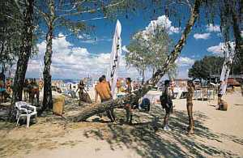
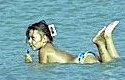
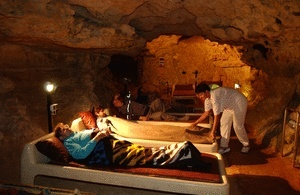

|
|
|
Alles über den
Plattensee |
|
Einst von
den Römern "Lacus Pelso" genannt, stammen
sowohl die
deutsche Benennung Plattensee, als auch die ungarische Bezeichnung
Balaton ab. |
|
Freuen
Sie sich auf einen Urlaub an Mitteleuropas größtem
Süßwassersee. Genießen Sie die ungarische
Kochkunst, die feurigen Weine und die Gastfreundlichkeit Ungarns. Das
milde Klima bietet die ideale Voraussetzung für ein
unvergessliches Urlaubsvergnügen. Der Plattensee, von den
Ungarn oft "ungarisches Meer" genannt, ist neben Budapest, Puszta und
den vielen
Thermalbädern ein weiterer Anziehungspunkt des Landes in der
sommerlichen Badesaison. Der Balaton, so sein ungarischer Name, ist ein
wahres Paradies für Familien mit Kindern, Segler und Liebhaber
des Strandlebens. |
Nur
gerade eine gute Autobahnstunde vom
Balaton entfernt liegt die ungarische Hauptstadt
.
Mindestens eine Tagestour in der ungarischen Hauptstadt ist
für motorisierte Plattenseeurlauber ein Muss. Das einheitliche
Stadtbild beeindruckt ebenso wie die Amphitheater aus
römischer Zeit, die türkischen
Bäder aus dem späten Mittelalter und
die unzähligen Sehenswürdigkeiten.
|
|
Das gibt es am Balaton:
Gut ausgebaute Strandbäder mit dem legendären
seidenweichen Wasser,
das auch diverse Mineralien enthält, gepflegte Uferpromenaden,
vielfältige Wassersportmöglichkeiten, Hofreitschulen,
Weinkeller und Winzerfeste erwarten die Gäste. Unternehmen Sie
Ausflüge in die malerischen Wälder Westungarns,
suchen Sie die Höhlen, Burgen oder die romantischen Ruinen der
alten Kirchen oder die majestätischen Burgruinen auf.
|
 |
Bereits
mit den ersten Kurbädern in Bad Hévíz
und Balatonfüred begann Mitte des 18. Jahrhunderts die
Entwicklung des Fremdenverkehrs und damit ein neues Leben am Balaton.
Gute Stimmung, Abenteuer, Spiel und Spaß erwarten Sie am
Plattensee. Sollten Sie sich trotz alledem einen ruhigen Urlaub
wünschen, so finden Sie vor allem in der
südwestlichen und westlichen Balaton-Region absolut stille
Uferstrecken, wo Sie noch ungestört angeln können
oder Ihre Freizeit beispielsweise mit Landschaftsmalerei vergolden
können. Zu den Attraktionen gehört
auch der Kleinbalaton ("Kis-Balaton) am SW-Ende des Balatons, der
international für seine vielfältige Vogelwelt bekannt
ist.
Die
gesamte Balaton-Region ist reich an Heilquellen, es gibt zahlreiche
Thermalbäder mit Kurbetrieb in allen Himmelsrichtungen vom See.
|
Stimmungsvolle
Tschardas, Gaststätten und Discos erwarten die
Gäste abends. Kulturelle Veranstaltungen und Feste sorgen
für
Unterhaltung. Die berühmte ,
die
feurigen Balaton-Weine, die Gastfreundschaft der Ungarn und die
temperamentvolle Zigeunermusik tragen zu einem gelungenen Urlaub bei.
Der
Plattensee und seine Umgebung gehören zu den
schönsten und bekanntesten Landschaften Ungarns. Sie sind
reich an Naturschönheiten, historischen Denkmälern
und Volksbräuchen. Dank der geringen Wassertiefe am
Südufer, kann man meistens bis zu 500 m weit in den See waten.
So laden die flach abfallenden Sandstrände zum unbeschwerten
Baden und Planschen ein und auch die Kleinen können ohne
Gefahr in den Wellen toben.
|
|
DAS
FREIZEITANGEBOT - Der
Plattensee, mit seinem fast 200 km langen Seeufer, ist landschaftlich
sehr abwechslungsreich. Im Norden gibt es Berge vulkanischen Ursprungs,
im Süden flachen Strand. Dank seiner geringen Tiefe
(durchschnittlich 3m, die tiefste Stelle ist 11 m bei Tihany)
erwärmt sich der See im Sommer rasch, und Wassertemperaturen
von 27°C sind, besonders am Südufer, keine
Seltenheit. Somit kann man schon im Mai baden, und diese
Freude zieht sich wegen des schönen Spätsommers oft
bis in den September. Der See empfiehlt sich in erster Linie als
Urlaubsort für Familien: ein echtes Kinderparadies! |
|
BADEFREUDE
ÜBERALL Am
südlichen Balatonufer gibt es die familienfreundlichen
kilometerlangen Sandstrände
zum Baden im hautfreundlich seichten Wasser. Der längste
Strand ist der Coca-Cola Beach (Bild rechts) in Siófok. Der
Boden ist am gesamten
Balatonufer feinsandig, er sorgt für die schwach alkalische
Beschaffenheit des Balaton
- das beste für die menschliche Haut. Von der insgesamt rd.
210 km langen
Uferstrecke des Balaton sind über 80 km Badestrände.
Man sieht ja den nächsten Strand
hinter jedem Strand. Während im Norden das Bakonygebirge (bis
zu 600 m hoch) steil abwärts in den Balaton versinkt und daher
die Badestrände im Norden des Balaton eher
für die
Schwimmer geeignet sind, steigt das Südufer erst langsam aus
der Balatonsenke
empor. |
 |
|
|
Der gesamte Südufer
ist besonders
familienfreundlich, auch
Nichtschwimmer finden hier Ihre Badefreude. Das Bild links
zeigt den familienfreundlichen Silberstrand in
Siófok. Bei
Balatonlelle,
Zamárdi und Fonyód sind die Strände
besonders flach und dort kann
man bis zu 1 Kilometer weit in den See marschieren.
Das ist ideal für Familien mit Kleinstkindern. |
|
Die
Umgebung des Balatons ist eine abwechslungsreiche Landschaft. Das
Nordufer grenzt an eine steil emporsteigende Kalkgebirgskette, da wird
der See rasch tiefer. Das Südufer besteht aus einem leicht
hügeligen, sanft herabfallenden Gelände. Hier ist das
Ufergelände seicht und damit ideal für Familien mit
Kleinkindern. |
 |
Geologie und Lage
Noch vor rd. 400 Millionen Jahren war die Gegend ein Seebecken.
Vulkanische Aktivitäten formten die Unterwasserlandschaft im
Pannonischen Meer.
Einige Millionen Jahre später erhob sich der Seebecken, der
ein Teil der
nördlich gelegener Gebirgslandschaft war. Die in Ost-West
Richtung verlaufende
Gebirgskette ist Kalkablagerung über eine erloschene
Vulkanlandschaft, aus der
im westlichen Plattenseegebiet noch viele Vulkanspitzen herausragen.
Durch
eine tektonische Senkung zwischen der heutigen Gebirgslandschaft im
Norden und der
Tiefebene im Süden entstand
zunächst
eine Landessenke
vor 25.000 Jahren. Vor
rd.
10.000 Jahren füllten die Niederschläge die
geologische Senke auf, es entstand der abflussloser
Steppense, der ohne
einen Abfluss von Natur aus wesentlich
größer war, als der heutige Balaton.
Vor
2.000 Jahren bauten die Römer den Sió Kanal vom
heutigen Siófok
zur Donau. Der Plattensee wurde dadurch schiffbar und die Höhe
des
Wasserpegels, der ohne Abfluss in den Regenperioden extrem anwuchs,
schwankt seitdem
nur noch geringfügig. Seit Ende des 18. Jahrhunderts wurde der
Siel bei
Siófok immer
weiter herabgesetzt, insgesamt um rd. 3 Meter, zuletzt im Jahre 2004.
Der Balaton war vor rd. 300 Jahren etwa dreimal so groß, wie
heute. Bemerkenswert ist der Anlass für die
Wasserpegelsenkungen. Neue
Uferbewohner beklagen sich laufend über feuchte Keller. Dabei
waren
diese Häuser meist
ohne Genehmigung auf Böden gebaut, die in den kalten Wintern
in
unsichtbaren Schilfbeständen illegal aufgefüllt und
so dem See
abgerungen wurden.
Luftbildaufnahmen sorgen für ein baldiges Ende dieses
illegalen
Landwachstums, der rund um den See herum überall,
auch in Natur- oder
Landschaftsschutzgebieten geschah.
- siehe
dazu mehr über
die Entstehung der Ortschaft Balatonfenyves.
|
Mit der
Absenkung des Wasserspiegels gingen zahlreiche Feuchtbiotope
verloren, die heute sicherlich zu den wertvollsten Naturschutzgebieten
zählen würden. Der Klein-Balaton
und das Groß-Berek am südwestlichen Ende des
heutigen Balatons sind heute Naturschutzgebiete, aber nur
noch Relikte. Es
sind die
wertvollsten Feuchtbiotope in Ungarn und Reiseziele naturbeflissener
Touristen. Ornithologen strömen hierher in Scharen.
|
|
Die
Absenkung des Balatons wird auf der folgenden Karte sichtbar. Um zweier
Berge herum am Nordufer, um den Badacsonyberg und Szigliget
herum
sieht man je einen ringförmigen Weg, die vor
rd. 2.000 Jahren in der
Römerzeit noch entlang
des Balatonufers verliefen, denn
beide Berge waren damals vom
"Lacus
Pelso" umspült.
Szigliget war vor rd. 300 Jahren noch immer eine Insel und die
Ungarn nannten die Insellandschaft "Sziget-Liget" (=Insel-Park auf
Deutsch). Aus den zwei Wörtern entstand "Szigliget", der
heutige Name der Ortschaft auf der einstigen Insel am heutigen
Nordufer des Balatons. Der heute
nicht mehr am Seeufer verlaufende Weg um den Badacsonyberg herum
heißt heute "Római út" (=Römer
Weg). Auch die Halbinsel Tihany war in der
Römerzeit eine Insel im einstigen
"Lacus
Pelso": |
|
|
|
|
|
Die Versteppung des Balatons
ist - nach wie vor - voll im Gange, der Landklau beschleunigt diese
Entwicklung. In den winterlichen
Monaten, wenn niemand zusieht, erweitern die Uferbewohner ihre
Grundstücke Stück für
Stück schon
seit Jahrhunderten. So war der See im Jahre
1970 noch 605 qkm groß, heute sind nur noch 592 qkm
vom
Wasser bedeckt.
|
| Die drei größten
europäischen Binnenseen im Vergleich |
|
|
Flächengröße
|
größte Tiefe
|
Länge |
Breite |
Höhe ü.M. |
|
Ladogasee
|
18.180 qkm
|
230 m
|
214 km
|
124 km
|
5 m
|
|
Balaton
|
592 qkm
|
11 m
|
75 km
|
12 km
|
105 m
|
|
Bodensee
|
537 qkm
|
254 m
|
63 km
|
14 km
|
396 m
|
|
| |
Der
Balaton ist nach dem Ladogasee in Russland noch immer der
zweitgrößte Binnensee in Europa. Heute
ist er 75 Kilometer lang und bis zu 12 Kilometer breit.
Südlich der Halbinsel Tihany ist er nur 1,5 Kilometer breit.
Hier existiert ein Fährbetrieb, der auch Reisebusse flott
transportiert (10 Minuten Fahrzeit). Die durchschnittliche Wassertiefe
beträgt 3 Meter, die tiefste Stelle mit 11 Metern befindet
sich südöstlich von der Halbinsel Tihany.
|
|
Der
größte Binnensee Mittel- und Westeuropas ist vor
allem bei Seglern beliebt. Tausende von Booten schippern Jahr
für Jahr über seine große
Wasseroberfläche. Kleine und große
Badegäste schätzen das riesige Gewässer
gleich, denn es ist sehr flach. Die
Wassertiefe liegt im Durchschnitt bei nur drei bis vier Metern. Sehr
schnell erreicht der See deshalb angenehme Badetemperaturen und die
Kinder können am Südufer relativ gefahrlos im
seichten Wasser plantschen. |
|
 |
SEGLER- UND SURFPARADIES
Der
Plattensee ist ideal
für verschiedene Arten von Wassersport: Segeln, Surfen, Rudern
sowie andere Freizeitaktivitäten: Reiten, Radfahren, Wandern,
Angeln (nur mit Angelschein) oder Tennis spielen. In
gibt es
zahlreiche Gaststätten und
Vergnügungsmöglichkeiten sowie ein buntes Nachtleben
mit vielen Discos, Bars und Nachtclubs. Auch in den anderen Badeorten
rund um den Plattensee besteht eine große Auswahl an guten
Lokalen, Csardas, Cafés und landestypischen
Geschäften. |
MEDITERRANE RUHE
Es
ist einerseits das mediterran getönte Klima, andererseits die
relativ
geringe
Zahl der Bevölkerung am Balaton, die für ein Ambiente
sorgt, das für
die
beste Erholung notwendig ist. Die größte Stadt am
Balaton ist Siófok
und hat
23.500 Einwohner. Die nächstgrößeren
Städte sind Keszthely mit 23.000
und Balatonfüred
mit 13.500 Einwohnern. Diese Städte sind
großflächig, die Urlauber
kommen
daher fast überall wie im Dorf vor. Mit 17 km Uferstrecke ist
Siófok
die
längste Siedlung am Balaton. Fremde und einheimische haben am
Balaton
keinen Grund zum Stress, sie werden rund um die Uhr
versorgt. Die Geschäfte haben
lange Öffnungszeiten,
in der Badesaison
auch
sonntags. Ein dichtes Netz von Eisenbahn- und Buslinien umspannt den
gesamten
Balaton, die Entfernungen sind relativ gering, so kann man auf das Auto
getrost
verzichten. Und wenn Sie der Meinung sind, sich mal von dieser Ruhe
erholen zu
müssen, so ab in die Kiste, die ungarische Hauptstadt Budapest
befindet
sich auf der
Autobahn M7 nur eine Stunde
entfernt, rd. 120 Kilometer
weit von Siófok. Aber auch in
Siófok findet
man
all das, was man Cool und Action nennt. Am kilometerlangen Coca Cola
Beach, im Zentrum von Siófok, wird Jung und Alt
gleichermaßen auf
Schritt und Tritt unterhalten - in mediterraner Ruhe.
|
|
Durchschwimmen
des Balatons
...ist eine uralte
Volksgaudi zu Ende Juli
Strecke:
Révfülöp-Balatonboglár,
5,2 km
|
 |
Beim
größten
Süßwasser-Schwimmturnier Mitteleuropas gehen seit
vielen Jahren mehrere rd. Tausend Teilnehmer an den Start, um die alles
abfordernde Strecke von 5,2 km zu bewältigen. Aus
Sicherheitsgründen werden alle Schwimmer von Booten der
Segelklubs und Wassersportvereine begleitet, bzw. bewacht. Die am
Ziel in
Balatonboglár angelangten Schwimmer werden von einem bunten
Programm erwartet, das bis spät in den Abend hinein dauert.
|
WELLNESS AM
BALATON - Ungarn ist das Land der Heilquellen: Rund
1300 heiße Thermalwasserquellen sind über das Land
verteilt. Nirgendwo
auf dem europäischen Kontinent gibt es so viel davon, wie in
Ungarn. In keiner
Ortschaft auf dieser Erde sprudeln so viele Thermalquellen mit
Heilwasser, wie
in der ungarischen Hauptstadt Budapest - und auch am Plattensee sind
sie zu finden.
Beispielsweise
in , einer
kleinen Industriestadt. Unter der Erde
befindet sich ein beeindruckendes
Karsthöhlensystem, das besichtigt werden kann. Die
Höhlen werden auch als Heilgrotten genutzt, um
Atemwegserkrankungen zu kurieren. |
 |
|
Auch
die
Stadt Bad
Hévíz ist
für ihre Quellen
berühmt.
befindet
sich knapp 4 km westlich von
,
am
nordwestlichen Ende des Balaton. Nur fünf Kilometer vom
Plattensee entfernt, befindet sich dort der größte
Thermalsee Europas mit einer Wasseroberfläche von 47 000
Quadratmetern. Er hat das ganze Jahr über eine angenehme
Temperatur bis 35 Grad - selbst im langanhaltenden Winter
kühlt er nur auf 21 Grad Celsius ab. Der
Bad Hévizer See
hat das kleine Städtchen zu einem international
bekannten Ausflugsziel gemacht. Auch deutsche Gäste sind dort
oft anzutreffen. Ein Abstecher zum nächsten
Kurparadies in bleibt
jedem Badegast unvergesslich. |
|
Das
Quellwasser im Stadtgebiet von
entspringt aus
vielen sogenannten Sauerbrunnen
und hat eine besondere Heilwirkung auf die Herzmuskulatur.
So baute man das bekannteste Herzkrankenhaus des Landes in
Balatonfüred. Der
indische Dichter und Philosoph Rabindranath Tagore, der in Europa und
den USA
studierte und 1913 "für seinen Einsatz gegen den englischen
Imperialismus und
für soziale Versöhnung" den Nobelpreis erhielt,
verbrachte mehrere Jahre
seines Lebens in . |
|
Im
Krankenhaus an der nach ihm benannten Hafenpromenade wurde er von
seiner schweren
Herzerkrankung geheilt und starb erst 1941 im Alter von 80 Jahren.
Rabindranath
Tagore vertonte einen Teil seiner Lyrik selbst. Er dichtete vieles
über sein
Wohlbefinden in Balatonfüred, über das angenehme,
mediterrane Ambiente am Balaton und machte
damit das Herzkrankenhaus von Balatonfüred über die
Landesgrenzen hinaus
bekannt. Nach seiner Genesung kam er öfter nach
Balatonfüred, wo er sich so
wohl fühlte und dichtete fleißig weiter
über Balatonfüred und den Bala-Bala-Balaton.
|
DAS KLIMA AM BALATON
Das
Klima in Ungarn ist etwas kontinentaler getönt, als in
Deutschland. Ungarn wird jedoch von den hohen
Bergketten der Karpaten klimatisch geschützt. Folglich ist das
Klima der einzelnen
Jahreszeiten weniger wechselhaft. Von
der Südwestgrenze Ungarns ist die Adria nicht weit entfernt.
Der mediterrane Klimaeinfluss ist am Balaton deutlich spürbar
und der
salzfreie See tut das seine dazu. Das lässt sich bereits an
der Vegetation
deutlich erkennen, mediterrane Pflanzen wachsen an den
steilen Kalkhängen des
nördlichen Balatonufers. Die Artenvielfalt ist deutlich
größer als bei uns. Mandelbäume
blühen bei Balatonfüred schon im frühen
März und im Sommer reifen Feigen und Zitronen in freier Natur.
Die gesamte Balaton-Region ist ein ideales Weinbaugebiet - das beste
für den Ballermann vor Ort.
|
NATURPARADIES
BALATON
- Es wird vieles für die Erhaltung
der natürlichen Ressourcen am Balaton getan. Motorboote
dürfen schon seit Jahrzehnten nur
noch elektrisch betrieben werden. Darauf freuen sich Surfer, Segler,
Badegäste und die Natur ebenso. Die Badesaison von
Mitte Mai bis Mitte September ist zwar kurz, doch Bala-Bala bietet der
Balaton reichlich im
ganzen Jahr.
Bild
rechts: Silberreiher im Schilfgürtel
zwischen Hafen und Silberstrand. |
 |
GEWÄSSERQUALITÄT
- Im
Balaton schwimmen bekanntlich viele Fische. Nicht
zufällig, denn das Badewasser des Balatons gehört -
im
internationalen Vergleich zu den saubersten seit vielen
Jahren -
nach Angaben der Autoklubs. Das ist ja kein Wunder, denn die Natur
selbst sorgt für
die beste Gewässerreinigung. Das Schilf filtert vor allem
Schwermetalle aus dem Balaton in sich und weil es alle paar Jahre
geerntet und somit aus dem See getragen wird, bleibt das Badewasser
dauernd rein. Der Balaton war einst überall von einem breiten
Schilfgürtel umsäumt. Viel davon musste den insgesamt
80 Kilometer langen Stränden weichen, sehr viel Schilf ist
jedoch bis heute übriggeblieben und wird schon seit vielen
Jahrzehnten
geschützt.
|
Flora und Fauna -
Die
Umgebung des Balatons ist reich an Flora und Fauna. Charakteristische
Bäume sind die Zerreiche, Buchenesche und Esche. Die
unzähligen Kiefer und Fichten gehören nicht hierher,
sie verursachen enorme Gebäudeschäden bei den
gelegentlichen Stürmen. Es gibt hier
rd. 270 Vogelarten, viele davon sind Zugvögel. Die
umliegenden
Wälder sind reich an Rotwild, Schwarzwild, Reh, Fuchs, Dachs,
Fasan, Feldhuhn, Schnepfen. Die edlen
Fische des Sees sind der Fogasch,
der Zander, der Hecht, der Karpfen und die Mülpe.
|
|
GESCHICHTE
- Bereits aus der Steinzeit gibt es gesicherte Hinweise auf menschliche
Existenz in der Balaton-Region. Östlich von
Balatonfüred in der
Farbgrube von Lovas, wurde
nachgewiesen, dass die Awaren nicht nur "mal waren", sondern identisch
mit den Langobarden sind, die im Mittelalter die Gegend um Padua
besiedelten. |
|
Die
Festung von Tihany
existierte bereits in der Eisenzeit, Kelten und Römer haben
hier ihre Spuren hinterlassen. Den 120,8 km langen
Sió-Kanal, den einzigen Abfluss des Balatons haben die
Römer vor rd. 2.000 Jahren gebaut.
|
|
Um
900 n.Chr. eroberten die Magyarenstämme die Umgebung des
Balatons. Das Grab des Gründers der Abteikirche von Tihany,
König Andreas I. aus der Familie der Árpáden befindet sich in
dieser Kirche oben auf der Bergkuppe. Die Abteikirche ist ein
prägendes Element der Landschaft. Bei schönem Wetter ist sie
vom gesamten Balatonufer sichtbar. Trotz einer Regulierung des
Wasserpegels durch den Sió-Kanal konnten sich die Anwohner von
Tihany in weiten Teilen der Schilflandschaft vor den Türken
schützen und wurden von den Osmanen während einer 150 jährigen
Besatzungszeit vielerorts nie entdeckt. Auch die Habsburger
hatten ihre Sorgen mit der Bevölkerung um den Plattensee
herum.
|
WEIN -
Bereits die Römer wussten die idealen Bedingungen am Balaton
für die Weintrauben zu schätzen: Viel Sonne,
wärmespeichernde Böden und Vulkangestein geben den
ungarischen Tropfen ihr besonderes Aroma.
Inwieweit
der Nobelpreisträger Rabindranath
Tagore in Balatonfüred vom Bala-Wein beeindruckt war, sollte
sein Geheimnis bleiben. Man wusste zu seiner Zeit noch nicht, dass der
Rotwein für die Herzmuskulatur nützlich ist und das
Rotweintrinken eine Vorbeugemaßnahme gegen Herzinfarkt
ist. |
|
Es
liegt jedoch nahe, dass der Dichter in die Geheimnisse der hiesigen
Weinkeller eingeweiht war, denn auf den nordöstlichen,
sonnenverwöhnten Hängen von
Balatonfüred, im Ortsteil Arács befindet sich -
zusammen mit den angrenzenden
Weinbergen des Nachbarortes Csopak - das größte
Weinbaugebiet in der
Weinbauregion Balaton.
|
Die
Rieslingsweine von Csopak und
Balatonfüred haben
unzählige Goldmedaillen bei den landesweiten Weinwettbewerben
im Weinland
Ungarn gewonnen. Das kommt nicht von ungefähr, denn das
gesamte Nordufer erstreckt sich auf vulkanischem Gestein, wo die
Einheimischen seit Jahrhunderten ihre Erfahrung mit dem Weinbau haben.
|
Oft
angebaut wird der Welschriesling, eine alte, ursprünglich
italienische Sorte von grün-gelber Farbe und mit einem
relativ hohen natürlichen Zucker- und einem
besonders hohen Säuregehalt. Außer den
Rieslingweinen von
Csopak und Balatonfüred gibt es noch die weltbekannten Sorten
aus dem Weinbaugebiet um den Badacsonyberg, wie der
süße Muscat Ottonel, der goldgelbe Graue
Mönch
(Ruländer) und der Blaustengler (Kéknyelű), der nur
am Badacsonyberg (Bild
rechts)
wächst.
Vom
letzteren gibt es sehr wenig und was davon exportiert wird, das geht
fast ausschließlich nach Übersee. Auf der
Halbinsel Tihany reifen Merlot, Cabernet und Zweigelt heran, aber auch
südlich vom See gibt es kräftige Balatonweine. In
Balatonboglár gibt es die neueste Großkellerei
etwa seit den 1980er Jahren, wo auch der Markensekt BB hergestellt wird. |
|
|
BADACSONY-WEINSTRASSEN
- sie befinden sich direkt vor den Füßen des
berühmtesten Thermalkurortes Bad Hévíz
- Bala-Bala
gibt es um den Balaton herum reichlich auch in der restlichen
Jahreszeit, denn
der Balaton befindet sich inmitten eines riesigen Weinbaugebietes. So
folgt ein
Wei nbauort
den anderen am Seeufer und im Nordwesten befindet sich der
weltberühmte Badacsonyberg. Der ist gar nicht von seinen
markanten, aus der
Ferne sichtbaren und landschaftsprägenden
Basaltsäulen berühmt geworden,
sondern was die vom südlichen Sonnenschein verwöhnte
Vulkanerde um den Berg
herum hergibt: den besten Bala-Wein in der weltbekannten . |
|
BADACSONYI KÉKNYELŰ Sogar
im sonnigen und vom Wein verwöhnten Sunshine State California
ist man von der
Sorte "Badacsonyi Kéknyelű" bzw. Blaustengel begeistert - diese Sorte ist in
Deutschland unbekannt, nicht jedoch im Übersee. Unter den
vielen
Ungarnweinen ist dieser unser Geheimtipp für Balatonreisende,
denn die Mutter dieses Weines, eine
einzigartige Rebsorte ausschließlich hier auf den
Vulkankuppen um den Badacsonyberg herum angebaut
wird. |
|
Eine
Weinprobe in einem Weinkeller in den Ortschaften
Szígliget, Badacsony oder Badacsonytomaj (22 km
östlich von Keszthely) ist daher ein Muss für echte
Weinkenner und alle Bala-Bala Fans. Es schadet nicht, wenn man im
Weinkeller doch den Graumönch (Ruländer) bevorzugt,
Hauptsache ist: bei Musik und Wein lernt man Land und Leute in ihrem
Element kennen. |
|
BALATON UND BALA-BALA
Es ist weniger Bala-Bala, als so mancher
denkt,
woher eigentlich Bala-Bala kommt. Natürlich vom
Bala-Bala-Balaton ! ...und wer den Balaton als
Plattensee kennt, ist ebenso willkommen
am oder auch zum Bala-Bala-Balaton ! ...und was jedermann auf
dieser Welt wissen
sollte, Bala-Bala kommt ursprünglich vom Großen
Balawatsch
! ...so nannte man den Geophysiker Ferdinand Huber
von der Halbinsel Tihany, wo er in den 1920er Jahren wirkte
...und seine englischen Wetterberichte im Funk
stets mit "Here is Bala Watch" begann ...und weil
der Bala Watch von seinem Bala-Wein (Bild rechts:
Ferdinand Hubers Bala-Bala-Wein von der Halbinsel Tihany) beeindruckt
laufend nur Bala-Bala-Bala sprach, wurde er zum Grossen Balawatch
der Nation erkoren ...und diesen mit einem
zusätzlichen "s"
eingedeutschten "Balawatsch" soll man nun - laut Duden - "Palawatsch"
schreiben, damit man Duden kauft - cool ! ...und so kommt
auch
der Duden-Palawatsch vom
Plattensee - aber der Balawatsch vom Balaton - vom
wunderschönen
Bala-Bala-Balaton.... |
|
BALA-BALA
Nicht
nur der Große Balawatsch von einst sorgte für viel
Bala-Bala. Auch heute gibt es sehr viel Bala-Bala
am Balaton, vor allem in den drei Großdiscos in
Siófok, wo man noch im Schaum
tanzen kann. Das ist ja cool und echt Bala-Bala. Die Badesaison dauert
zwar von
Mitte Mai bis Mitte September, doch Bala-Bala bietet der Balaton
reichlich im
ganzen Jahr.
(Internet
Explorer erforderlich)
Der
Graumönch (ungarisch für den Grauburgunder bzw.
Ruländer, wird neulich Pinot Grigio genannt) ist ein von den
Spitzenweinen vom Badacsony-Weinbaugebiet. |
|
KULTUR TROTZ VIEL BALA-BALA
Das
kulturelle Leben in Balatonfüred (13.500 Einwohner) ist
weltweit bekannt. Als kultureller Höhepunkt
gilt der
,
der
seit
1825 alljährlich am Namenstag der
Anna stattfindet und mit der Krönung der neuen
Ballkönigin endet. Der Anna-Ball ist
ein Treffpunkt der ungarischen High Society aus aller Welt, wo auch
andere Nationen
sogar aus Übersee zahlreich vertreten sind. Trotzdem ist der
Anna-Ball für alle
da.
|
Das
kulturelle Leben in der 23.000 Einwohner zählenden
Stadt am
Westufer des Balaton entwickelt sich in rasantem Tempo, denn die
größte Stadt am westlichen Balatonufer bietet
viel. Im Sommer kann man hier direkt im Balaton baden, viel
interessanter ist es
jedoch was Keszthely in der übrigen Jahreszeit bietet. Kultur
einer Stadt und
der Provinz treffen hier aneinander. Am besten profitieren Sie davon
zum
Jahreswechsel. Am Silvesterabend füllt sich die Stadt, viele
ausländische
Gäste feiern den Schritt in das Neue Jahr mit den
Einheimischen zusammen. In
einem der größten und sehenswertesten
Schlössern des Landes, im Schloss
Festetics in Keszthely findet alljährlich am 1. Januar das
Neujahrskonzert in
einer einmaligen Ambiente statt. Wir bieten unsere familienfreundlichen
Apartments im
,
in der
Stadtmitte von
Keszthely um den
Neujahrstag herum zu besonders günstigen Konditionen an. Eine
rechtzeitige
Anmeldung bringt Ihnen Vorteile. Sie werden von den Preisen angenehm
überrascht
sein. In unserem Klubhotel können Sie die Vorteile des
benachbarten
Weinmuseums
(zugleich Weinlokal und landestypische Gaststätte) oder die
Nähe des in
Europa
größten, weltweit zweitgrößten
natürlichen Thermalsees im weltberühmten
Kurort Hévíz nutzen.
Der 4 Hektar
große Thermalsee mit
ganzjährigem
Badebetrieb und der Kurbetrieb in
liegen nur 4 km von unserem
Klubhotel
entfernt. Sie können auf das Auto getrost verzichten, der
Thermalsee
ist von
Keszthely mit einer regen Busverbindung schnell zu erreichen. Ob Sie
Ihren
Kuraufenthalt zum Jahreswechsel in Keszthely mit den Vorteilen des
bekannten
ungarischen Zahntourismus nutzen und dabei auch noch eine neue Brille
neuesten amerikanischen Standards zu günstigen Konditionen
besorgen
wollen, das
bleibt Ihnen überlassen. Wir arrangieren und vermitteln all
das gerne
für Sie.
|
|
sehenswerte
Ortschaften in der Balatonregion |
|
ANGLERPARADIES Zum
Bala-Bala gehört nicht nur der Bala-Bala-Wein, die
Thermalbäder oder die
vielen Badestrände. Der sagenhafte Fischreichtum des Balatons
ist weit
über die
Landesgrenzen hinaus bekannt. Im Balaton leben heute mehr als 40
verschiedene Fischarten. Für Angler sind Karpfen, Fogasch und
verschiedene Weißfische eine ersehnte Beute. Damit die
einheimischen und ausländischen
Sportsfreunde nicht enttäuscht werden, setzt man
alljährlich unzählige
Jungfische aus. So ist der Fischbestand immer gesichert. |
|
 |
Die Fische
können
gar nichts dafür, dass sie am Angelhaken landen. Für
sie sind es zu viele
Angler, die auf sie auf den Stegen und Molen rund um den
See warten. Auch wenn
sie eine Ahnung davon bekommen und die Uferregion meiden, eines
Tages landen sie doch in einem Anglerboot. Denn sie
werfen
ihre Angeln aus ihren Booten in
alle Richtungen weit hinaus. Sollte das noch nicht genug
Stress
für die
Fische verursachen und sie zur Aufgabe zwingen, dann gibt es
noch
die
einheimische Fischereiflotte, die aus ihren kleinen und
größeren Booten
Netze
vor die Fischschwärme wirft. |
|
In
Siófok befindet
sich die Zentrale der
Balaton-Fischereiflotte.
Dort haben Sie die Qual der Wahl unter frisch eingefrorenen oder noch
quick
lebendigen Fischen, falls Sie die Delikatesse für den Mittag-
oder
Abendtisch
nicht selbst fangen und die Zeit lieber für andere
Aktivitäten nutzen
wollen - oder vor Freunden und der Familie stolzieren wollen.
Sollten Sie mal auf die Idee kommen, zur Abwechslung oder gleich andere
Anglerparadiese in Ungarn aufzusuchen, so empfehlen wir Ihnen den Traum
ungarischer Angler am , wo
man zwischen Ruhezone und rauschendem Fluss
wählen und z.B. so einen
Wels fangen kann, wie am Bild rechts zu sehen ist: 170 cm lang und 44
kilo. |
|
|
FOGASCH - Ist ein
von den verschiedenen Namen für den Zander, Schill oder
Hechtbarsch. Als
besondere Delikatesse gilt der Fogasch (Bild rechts), eine Unterart des
Zanders, der nur im
Balaton vorkommt. Den kleinen Fogasch nennt man noch Zander, erst
nach seinem ersten Lebensjahr, ab einem Gewicht von 1,5 Kilogramm wird
er zum Fogasch. Diese Bezeichnung deutet auf die wenigen, aber kräftigen Zähne dieses Raubfisches hin, die erst nach dem ersten
Lebensjahr Furcht erwecken und eine Gefahr für den Angler
darstellen. Dünne Gräte
hat der Fogasch keine. Sein
Geschmack ist vergleichbar mit der Forelle. |
 |
Ob
in der vom Paprika feurigen ,
gegrillt oder in einer
Mehlpanade
gebacken, der frisch gefangene
Fogasch schmeckt immer - allerdings erst nach der Zubereitung und nicht
roh.
Aber wer weiß es schon, die Ungarn sind eben keine Liebhaber
von Sushi - noch
lange nicht.
|
AAL - Schon
seit 1966 lebt der Aal im Balaton, aber die Ungarn haben laufende
Sorgen mit ihm. Er wurde zwar eingebürgert, aber
er kränkelt und es dauert bestimmt noch einige Jahrzehnte, bis
man diesen Fisch dort in den Griff
bekommt - wenn überhaupt. Der Aal aus dem Balaton fehlt
daher auf allen Speisekarten rund um den Balaton. Wer nur den
geräucherten Aal vom Nordsee kennt - vielleicht vom Hamburger
Fischmarkt - oder den von Gourmetköchen gekochten Aal, der
sollte ihn einmal auf ungarische Art probieren und in einer Panade aus Paprika
und Mehl braten.
|
|
GRASKARPFEN
- Bekanntlich
gibt es überall viele Sorgen mit der Einbürgerung
fremdländischer Arten - so
hat man im Balaton das Problem auch mit diesem Fisch. Aus der fernen
Amur hatte man den schilffressenden großköpfigen
Karpfen, auch Amurkarpfen genannt (Busa auf Ungarisch), als der
Naturschutz noch weit
hinter Sichel, Hammer und rotem Stern hinkte. Der Graskarpfen
wächst rascher heran und wird größer, als
in ihrer asiatischen Heimat, vermehrt sich aber unter
mitteleuropäischem Klima überhaupt nicht. Der Fang
und natürliche Auslese wird im Labor massenhaft
nachgezüchtet. Wie man den Graskarpfen in seiner Heimat in der Amur fängt,
zeigt das Bild rechts - so geht man im Herbst auch im Balaton
vor. In China ist der Fang mittlerweile zu einer touristischen
Attraktion geworden. |
 |
|
Der
Jahresfang hat sich seit der Einbürgerung stabilisiert und
betrug 232 Tonnen im Jahre 2005. |
| |
| |
Der MARMORKARPFEN
(links, bis zu 120 cm/38 kg, klicke auf das Bild) und der SILBERKARPFEN
(rechts) wurden aus fernöstlichen Gewässern
eingebürgert. Die Ungarn nennen sie
(sprich: Buscha). |
|
Die
karpfenartigen Neubürger sind Pflanzenfresser und
müssen im Labor laufend
nachgezüchtet
werden, weil es
mit der
Vermehrung im Balaton aus bisher unbekannten Gründen nicht
klappt. Die
eingebürgerten Karpfen aus dem Fernost sind in
erster
Linie Bakterien- und Algenfresser, was der
Gewässerqualität zugute
kommt. Alle
drei eingebürgerten Karpfen sind zum
Wirtschaftsfaktor geworden,
ihr Anteil am Gesamtfang der Fischereiflotte beträgt
beinahe
20%. Es ist eine ökologische Aufgabe der Fischereiflotte,
einen
Ausgleich unter Fangmenge, Nachzucht und Pflanzenfraß zu
realisieren.
|
Für
Sportangler sind die drei aus Asien
eingebürgerten Karpfenarten freigegeben, die
Mindestfanggröße beträgt 40 Zentimeter. Sie
sind in diesem Stadium eine Delikatesse in den Fischrestaurants um
den Balaton herum - geräuchert auf kalter Platte oder paniert
und gebraten. Genannt sei noch die Tatsache, dass diese drei
Fischarten in der Tat keine Karpfenfische sind, sie zählen zur
Gruppe der Weißfische. Die deutsche Namensgebung als Karpfen
rührt von der äußeren Ähnlichkeit
und der mit unseren Karpfenarten vergleichbaren
Ernährungsweise.
|
| |
| |
Ungarn-Tourist Team

|
| |
| |
|
|